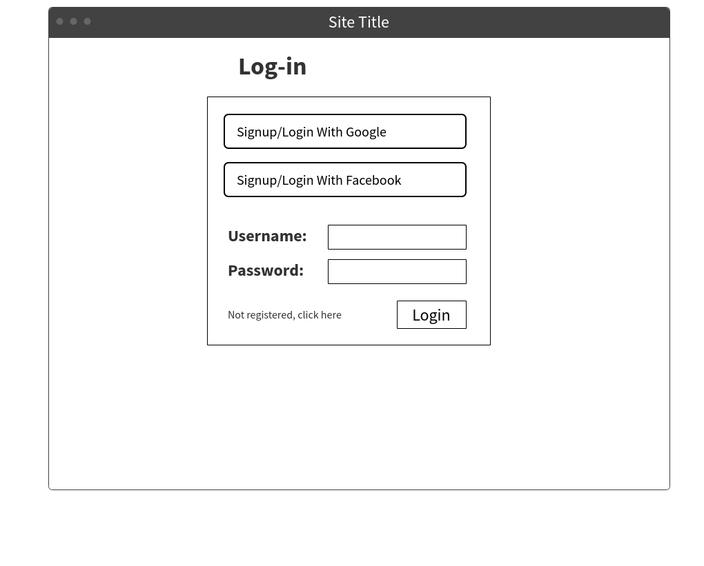
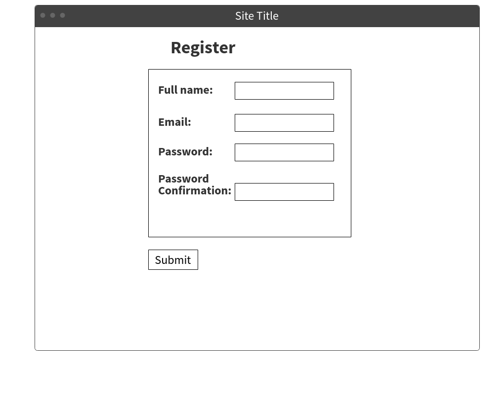
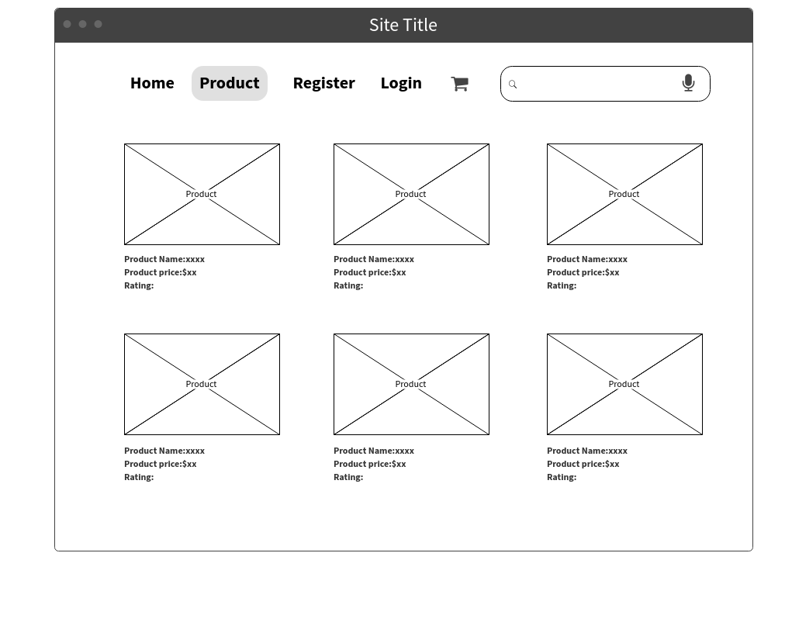
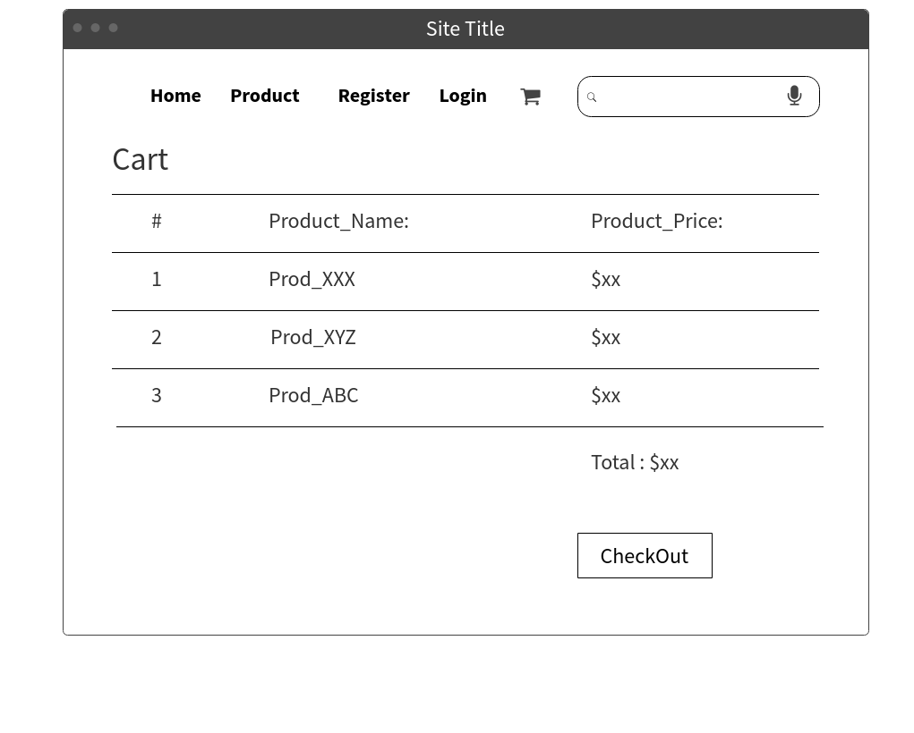

This is Group-1 and the group members name are given below with their id.
Name
ID
Polash Chakrabarty
1520579042
Tasmia Rahman Shahidi
1521367642
Safin Mahmud
1510903642
Jannatun Nur-E Rukshana
1511767642
Muntaha Kabir
1430243642
Syeda Anika Rehenuma
1120630042
Nazmus Shakib
1511336042
Introduction
1.1 Purpose
1.2 Document Conventions
1.3 Intended Audience and Reading Suggestions
1.4 Project Scope
1.5 References
Overall Description
2.1 Product Perspective
2.2 Product Functions
2.3 User Classes and Characteristics
2.4 Operating Environment
2.5 Design and Implementation Constraints
2.6 User Documentation
2.7 Assumptions and Dependencies
External Interface Requirements
3.1 User Interfaces
3.2 Hardware Interfaces
3.3 Software Interfaces
3.4 Communications Interfaces
System Features
4.1 System Features 1
4.2 System Features 2
Other Non-functional requirements
5.1 Performance Recquirments
5.2 Safety Recquirments
5.3. Security Recquirments
5.4. Software quality attributes
5.5. Business rules
Appendix
Appendix A: Glossary
Appendix B: Analysis Models
1. Introduction
This document is meant to delineate the features of eCommerce website. The purpose of the document is to collect and analyze all assorted ideas that have come
up to define the system, its requirements with respect to consumers. In short, the purpose of
this SRS document is to provide a detailed overview of our eCommerce website, its parameters
and goals.It is intended to provide complete solutions for vendors as well as customers through a single get way using the internet. It will enable vendors to setup online shops,customer to browse through the shop and purchase them online without having to visit the shop physically. he
administration module will enable a system administrator to approve and maintain various lists of shop category.
We use standard HTML for writing and MockFlow for designing website wireframe.
We are making this document by keeping in mind different types of readers. This document will be useful for different audience in various ways.
Audience
Use
Developers
They will use this documents for guidance for design and implemetation phase.
Administrator
They will see the constraints all cover properly.Time and cost is within limits or not.
Marketing Staff
They can use this document to make advertisements for this web store because by reading this document they will know what the system will do? How this system is different from others.
Users
They can ensure there self by reading the SRS that their needs being met in the webstore or not.
Testers
They will test the implementation of the project according to the SRS base.
Documentatio Writer
They will use this document during the documentation of the project. It will be reallyhelpful for them.
We will provide the best functionality of most popular eCommerce website like Amazon, Alibaba etc.
Our online shopping site will be available 24 hours a day and 7 days in a week. There will be partially maintenance for once a week.
Our primary objective is to facilitate the customer. Through online shopping they will save a lot of time.
Different companies (especially new one) will get chance of cheap advertising.
Companies will no need to have extra stock. They can able to make products on demand.
We will guide user to buy good products through our online help system.
We will provide normal search, voice search and multi-voice search to make the shopping more convenient for our customer.
We will provide excellent security for user details especially for credit card numbers.
We will also provide different survey, reports that show different companies performance details.
We will manage customer accounts.
We will provide easy registration via Facebook or Gmail account.
We will maintain database for different users.
IEEE. IEEE Std 830-1998 IEEE Recommended Practice for Software Requirements
Specifications
IEEE Computer Society, 1998
2. Overall Description
This product is for the person who wants to buy the product easily without any difficulties. This product aimed toward the customer who don’t want to visit the shop as he might don’t get time for that or might not interested in visiting there and dealing with lot of formalities.
This should support this:-
User should be familiar with the terms like
Login
Register
Order system
Payment system
Operating System: Ubuntu, Linux Mint, Solus, Debian; Windows 7,8,10 and Android 5.0,6.0, 7.0, 7.1, 8.0, 8.1
Hardware Platform: Android using devices should have minimum memory requirement of 512 MB RAM
2.1. A microphone to enable voice input
Tools: the website will contain HTML files, images, videos, flash files, databases
Time: The time required to develop the website and the android app may exceed the estimated schedule if-
# further feature requests after the initial design stages
# hardware changes that impact performance etc.
Agreement: Customers will be informed and customer agreement will be made before registration for recording the microphone while using the voice search.
This is to help the users (Admin and customer level) to maintain, update and use the ecommerce website easily.
Admin Level:
1. Login: need to type a user name and password, and then select user type “Admin” for login to the site as an admin.
2. The Admin Area: can make changes; add or remove new products, check for orders, and anything related to the website here.
3. Logout: After finishing work, can logout from the site clicking the logout button at the right upper corner.
Customer level:
1. Registration: If customer wants to buy the product then he/she must Be registered, unregistered user can’t go to the shopping cart.
2. Login: Customer have to login to the system by entering valid user name and password for the shopping.
3. Make list: Customers can make the list of required products in the search option and the searched items with all available types and details will be appeared in the screen.
4. Voice search: Customers can make the list by just uttering the names of the products properly.
5. Changes to Cart: Customer can make order or cancel order of the product from the shopping cart.
6. Payment: In this system we are dealing the mode of payment by Cash. We will extend this to credit card, debit card etc in the future.
7. Logout: After ordering or surfing for the product customer has to logout.
8. Report Generation: After ordering for the product, the system will sent one copy of the bill to the customer’s Email-address and another one for the system data base.
Working of the product needs Internet Connection.
3. External Interface Requirements
Various interfaces for the product could be-
Login Page

Registration Form

There will be a screen displaying information
about product that the shop having.

If the customers select the add to cart button
then another screen of shopping cart will be
opened.

Since the application must run over the internet, all the hardware shall require to connect
internet will be hardware interface for the system. As for e.g. Modem, WAN – LAN, Ethernet
Cross-Cable.
During our system development, we have to design both static and dynamic website
interfaces, create website functions and a database system, edit photos and pictures, and
print out reports, so its has a set of software requirements.
The following are needed requirements.
Operating System: Windows/Linux/Mac any OS which
supports networking.
Python
Django Framework.
PostgreSQL
Docker
Web browser.
The two parties should be connected by LAN or
WAN for the communication purpose.
4. System Features
Functional requirements-
Registration: For buying products, customer has to registered. Otherwise he/she is unable to buy products.
Login: For shopping, customers need to use a valid user userID and password for login to the system.
Add to cart: For buying products, customer select the products what they need and add to his/her cart for order.
Voice Search: For selecting items for buying, customer can search products using voice search system instead of typing.
Multiple search: Multiple search means, customer can search different types of products from different section at a time.
Show total price of products: After adding the products what customer select, the system will show a total price list of shopping which are in the cart.
Add delivery charge: With the total price list of the products, add the delivery charge.
Payment System: For payment, we initially deal with the system of cash on delivery. But later we will extend this system to credit card, debit card, bkash etc.
Logout: After finishing all the process step by step for shopping, customer has to logout from the system.
N/A
5. Other Non-functional requirements-
To maintain an allowable maximum speed for the system for maximum usage of the customer, any number of customers can access the system at any time in that speed.
The application will not affect data stored outside of its server nor will it affect any other web applications. It cannot cause any damage to the phone or its internal components. The only potential safety concern associated with this application applies to virtually all handset apps. This app should not be used while operating a vehicle or in any other situation where the user's attention must be focused elsewhere.
Since this software will be hosted on erver, all the user data will be kept on the server. Product should be able to protect privacy of user data. Workspace of the user should only be
accessed through user own credentials and any other user should not be able to access to the user
private data.
Since execution will also be done in the machine in the server, user should be restricted in
terms of user rights. User should only access to his own workspace and should not access to any
other workspace with the programs they run on the server. Also rights of the user should be
restricted so that user can not harm to system by the programs they run or by the commands they
run on terminal.
Since all the data will be transferred on the web, system should also use an encryption and
decryption mechanism only intended user can decode the data and work on the data.
This software is easy to use for both developers and customers. Some important attributes of our software are that it is secured, usable, available, well performed. Some other attributes that we worked on are scalability, robustness, operability, maintainability. We also worked on voice search so that illiterate people can use it. We emphasized more on simplicity rather than superiority so that common people find it easy to use.
Our software will be built in such a way that it will be reliable to all. Security is our main concern so that it doesn't make any mistake and in case of an error it will have a system so that our customers can get refund. We will also ensure that our customers and salesman both can easily solve a transaction error. Our voice search system will be based on Asian accent so that common people don't find any problem to select their product. If possible we will add suggestions to the voice search.
Appendix
Term
Description
SRS
Software Requirement Specification.
eCommerce
Electronic Commerce, commonly known as eCommerce or e-commerce or e-business consists of buying and selling of products or goods and services over electronic system such as Internet and other computer networks.
Customer
People who will purchase from this ecommerce system.
Administrator
The vendor who will purchase this ecommerce website for their business and maintain the site.
Website Wireframe
: A visual guide that represents the frame work of a website.
HTML
(Hypertext Markup Language)Standard markup language for creating web pages and web applications.
MockFlow
A tool for designing User Interface blueprints for Websites and APPs.
Normal search
Typing single search items or typing item list (multiple searches at a time) for search in the search menu.
Voice search
Searching an item or list of item at a time by uttering the item names properly.
Operating System
The software program of a computer or mobile devices that manages the hardware and software of the device to run this website.
Hardware Platform
The set of compatible hardware that will enable this service run on the device.
Modem
A network hardware device.
WAN-LAN
(Wide Area Network and Local Area Network) Computer networks that interconnect computers over a large area and limited area respectively.
Ethernet Cross-Cable
Network technology that connect computing devices together directly.
Server
A program that processes requests and deliver data to another electronic device (computer or mobile device) over internet or a local network.